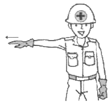
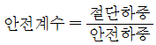
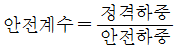
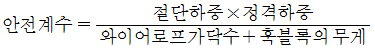
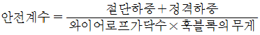
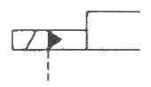

컨테이너크레인운전기능사 (2013-07-21 기출문제)
1과목: 임의 구분
1. 크레인 작업 표준 신호지침에서 그림과 같이 집게손가락으로 가리키는 수신호는?

- 수평 이동
- 운전자 호출
- 천천히 이동
- 운전방향 지시
(정답률: 82%)

2. 컨테이너크레인 구동장치의 일상적인 점검·검사 방법에 대한 설명 중 틀린 것은?
- 작동 중 정상적인 아닌 소음, 발열 및 진동이 없을 것
- 수시로 비상정지를 시켜 구동장치를 점검할 것
- 회전부에 대한 방호장치가 양호할 것
- 기초 지지대에 균열 및 부식 등 위험요소가 없을 것
(정답률: 97%)
3. 와이어로프의 안전계수에 대한 설명으로 옳은 것은?




(정답률: 81%)
4. 컨테이너크레인에서 트롤리 트래블 스피드(Trolly travel speed) 120m/min이 의미하는 것은?
- 크레인의 주행속도가 1분에 120m라는 의미이다.
- 크레인의 횡행속도가 1분에 120m라는 의미이다.
- 크레인의 호이스트 속도가 1분에 120m라는 의미이다.
- 크레인의 최대 인양 높이가 120m라는 의미이다.
(정답률: 80%)
5. 항만시설장비 검사기준상 운전실의 제조검사 항목에 속하지 않는 것은?
- 진동을 감안한 구조로 설치되어야 한다.
- 운전실내의 조도는 100룩스 이하여야 한다.
- 운전자가 화물을 취급할 수 있도록 충분한 시야를 확보할 수 있어야 한다.
- 운전자가 운전실 외부에 연락할 수 있는 통화 또는 방송 설비 등을 구비하여야 한다.
(정답률: 92%)
6. 컨테이너크레인의 스프레더에 대한 설명으로 틀린 것은?
- 스프레더의 각 코너(4곳)에 부착된 랜딩 핀(Landing pin)이 최소 1개 이상 착상되면 트위스트 록 장치가 작동된다.
- 일반적으로 20, 40, 45피트 컨테이너의 하역에 사용된다.
- 플리퍼(Flipper) 등을 사용함으로써 보다 정확하게 컨테이너를 잡을 수 있다.
- 트위스트 록 핀(Twist lock pin)은 마모나 크랙 유무를 정기적으로 점검하여야 한다.
(정답률: 90%)
7. 엔진식 트랜스퍼크레인의 설명으로 적합하지 않은 것은?
- 블록간의 이동이 자유롭다.
- 야드에서 컨테이너를 하역 및 적재한다.
- RTTC(Rubber Tired Transfer Crane)로 불린다.
- 야드와 크레인 스팬사이를 왕복하면서 컨테이너 운반작업을 한다.
(정답률: 82%)
8. 컨테이너크레인이 견딜 수 있는 설계기준에서 지역별 최대순간풍속으로 맞는 것은?
- 서해안 : 초당 40미터 이상
- 목포 : 초당 50미터 이상
- 동해안, 남해안 : 초당 60미터 이상
- 울릉도 : 초당 70미터 이상
(정답률: 84%)
9. “레일 클램프는 ( )에 의해 해제되며, ( )에 의해 제동(Clamping)된다.”에서 ( ) 안에 들어갈 단어가 순서대로 나열된 것은?
- 전기, 관성력
- 관성력, 전기
- 유압, 스프링의 힘
- 스프링 힘, 유압
(정답률: 69%)
10. 컨테이너크레인에서 호이스트 와이어포르의 길이를 일정범위 내에서 조정하여 스프레더를 중심축에서 앞뒤, 좌우 방향으로 조정하여 컨테이너를 원활히 잡을 수 있도록 해주는 장치는?
- 로프 텐셔너
- 트림/리스트/스큐 조정 장치
- 스프레더 케이블 릴 장치
- 로프 슬랙 감지 장치
(정답률: 81%)
11. 컨테이너크레인에서 커티너리(Catenary)의 역할은?
- 호이스트 와이어로프 안전보호
- 트롤리 와이어로프 처짐방지
- 태풍시 크레인 안전보호
- 붐 와이어로프 처짐방지
(정답률: 63%)
12. 와이어로프의 특성에 대한 설명으로 가장 거리가 먼 것은?
- 보통 꼬임(Ordinaty lay)은 스트랜드의 꼬임과 로프의 꼬임이 반대방향이다.
- 보통 꼬임(Ordinaty lay)은 외부 소선의 접촉 길이가 짧아 소선의 마모가 쉽다.
- 랭 꼬임(Lang's lay)은 마모에 대한 내구성은 좋으나 킹크(kink)가 발생하기 쉽다.
- 같은 굵기의 와이어로프인 경우 소선이 가늘고 많으면 유연성이 없어져 취급하기 어렵다.
(정답률: 75%)
13. 리치 스태커와 포크 리프트에 관한 설명으로 옳은 것은?
- 리치 스태커와 포크 리프트는 운송용으로 가장 적합하다.
- 리치 스태커는 컨테이너를 회전시키는 기능이 있으나 포크 리프트는 없어 고단 적재시 숙련이 요구된다.
- 리치 스태커와 포크 리프트는 적컨테이너, 공컨테이너 모두를 처리할 수 있으나 공컨테이너 처리시 리치 스태커가 더 경제적이다.
- 포크 리프트의 마스트에 스프레더를 부착하면 리치 스태커가 된다.
(정답률: 79%)
14. 컨테이너를 전용으로 취급하는 크레인으로 부두안벽의 레일 상에 설치되어 있는 하역장비는?
- Reach stacker
- RTGC
- Container crane
- Transfer crane
(정답률: 87%)
15. 컨테이너크레인이 계류위치에 있을 때 풍압에 의해 그 자리에서 전복되는 것을 방지하는 장치는?
- 앵커
- 타이다운
- 레일 클램프
- 차륜멈추개
(정답률: 75%)
16. 컨테이너 크레인의 시스템을 전체적으로 감시하는 장치를 무엇이라고 하는가?
- 크레인 모니터링 시스템
- 컴퓨터 모니터링 시스템
- 터치스크린 모니터링 시스템
- 동작 감시 시스템
(정답률: 82%)
17. 컨테이너 크레인이 옆에 있는 다른 컨테이너 크레인으로 근접이동시 감지하는 안전장치는?
- 주행충돌 방지센서
- 주행 좌·우측 정지센서
- 선박충돌 방지센서
- 케이블 완전 풀림센서
(정답률: 87%)
18. 컨테이너 크레인에서 정상적인 트롤리 운전이 불가능한 경우는?
- 붐이 수평으로 내려져 있을 때
- 로프텐셔너(Rope tensioner) 장치가 작동되지 않을 때
- 붐 호이스트(Boom hoist)의 상승 동작이 되지 않을 때
- 운전실 접근 출입문이 닫혀 있을 때
(정답률: 68%)
19. 직류 전동기의 주요 구성요소와 관계가 없는 것은?
- 토크(Torque)
- 전기자(Armature)
- 계자(Field magnet)
- 정류자(Commutator)
(정답률: 83%)
20. 도체와 저항의 관계를 설명한 것으로 옳은 것은?
- 도체의 단면적이 클수록 저항 값은 증가한다.
- 반도체는 길이가 길수록 저항 값이 감소한다.
- 도체는 열에너지가 가해지면 저항 값이 증가한다.
- 반도체는 빛에너지가 가해지면 저항이 커진다.
(정답률: 69%)
2과목: 임의 구분
21. 컨테이너 크레인의 횡행과 권상의 위치를 확인하기 위해 사용되는 계기는?
- 타코 제너레이터
- 엔코더
- 결상계전기
- 차단기
(정답률: 76%)
22. PLC의 주요 구성요소에 해당하지 않는 것은?
- 메모리
- 전원장치
- 정류장치
- 중앙처리장치
(정답률: 69%)
23. 스프레더가 컨테이너 작업 중 어떤 물체에 걸려서 하중을 받을 때, 와이어로프에 순간적으로 가해지는 하중 또는 운동에너지를 흡수하여 로프에 가해지는 충격을 최소화시켜 주는 장치를 무엇이라고 하는가?
- 틸팅 디바이스
- 앤티 스내그
- 트림, 리스트, 스큐 장치
- 실린더 홈 위치
(정답률: 71%)
24. 일정한 논리에 의해 정해진 순서에 따라 제어의 각 단계를 순차적으로 추진해 가는 제어는?
- 시퀀스 제어
- 방향 제어
- 압력 제어
- 유량 제어
(정답률: 93%)
25. 수동조작 자동복귀 접점을 사용하는 스위치는?
- 푸시버튼 스위치
- 선택 스위치
- 캠 스위치
- 압력 스위치
(정답률: 83%)
26. 컨테이너의 길이에 따라 스프레더의 길이를 알맞게 조정하는 기능의 명칭은?
- 헤드블록
- 빔
- 트위스트 록
- 텔레스코픽
(정답률: 75%)
27. 컨테이너 크레인의 주행장치에 대한 설명이 아닌 것은?
- 운전실의 MCS(Master Controller Switch)를 좌·우측으로 조작하면 크레인이 주행한다.
- 크레인이 주행할 때는 일반적으로 사이렌과 경광등이 자동으로 작동한다.
- 주행을 시작하면 케이블 릴(Cable reel)은 자동으로 정지된다.
- 주행과 관련된 각종 잠금장치가 해제되어야만 운전이 가능하도록 인터록 되어 있다.
(정답률: 74%)
28. 컨테이너 크레인에서 붐 래치장치의 동작을 바르게 설명한 것은?
- 자체중량으로 내려오고, 유압에 의하여 올라간다.
- 유압으로 내려오고, 자체중량에 의하여 올라간다.
- 자체중량에 의하여 내려오고 올라간다.
- 유압에 의하여 내려오고 올라간다.
(정답률: 91%)
29. 전기장치 보관시 점검할 사항으로 맞지 않는 것은?
- 리미트 스위치의 기능 확인
- 전장 패널 고장 및 손상 여부
- 전동기 변색 여부
- 전기 커넥터의 꼬임 여부
(정답률: 77%)
30. 컨테이너 크레인의 호이스트 조작 중 과속도에 의한 소프트웨어적 감지기능은 몇 % 이상의 과속도가 발생되면 고장으로 설정되는가?
- 5%
- 10%
- 15%
- 20%
(정답률: 49%)
31. 컨테이너를 선박으로부터 내리는 것을 무엇이라 하는가?
- 발송
- 보관
- 적화
- 양화
(정답률: 86%)
32. 야드에서의 컨테이너 적재방식 중 사용 장비에 따라 분류한 것이 아닌 것은?
- 온 섀시 방식(On chassis system)
- 스트래들 캐리어 방식(Straddle carrier system)
- 트랜스퍼 크레인 방식(Transfer crane system)
- 컨테이너 크레인 방식(Container crane system)
(정답률: 68%)
33. 선박 해치커버의 유형에 속하지 않는 것은?
- 멀티 풀(Multi-pull) 해치커버
- 싱글 풀(Single-pull) 해치커버
- 접이식 해치커버
- 플랜지식 해치커버
(정답률: 75%)
34. 컨테이너 터미널의 역할 및 조건에 대한 설명으로 옳지 않은 것은?
- 컨테이너 운송에 있어서 해상 및 육상 운송의 접점인 부두에 위치하고 있다.
- 컨테이너선에 컨테이너의 양·적화 작업이 신속하게 이루어지도록 하는 장소를 말한다.
- 대량의 컨테이너를 신속·정확하게 처리하기 위하여 각각의 작업과정을 합리적으로 제어하는 시스템을 보유해야 한다.
- 항만이 아니 내륙에 위치하여 컨테이너 화물과 저장과 취급에 대한 서비스를 제공하며, 수출입 통관업무가 이루어지는 곳을 가리킨다.
(정답률: 89%)
35. 컨테이너에 표시되어 있는 「22G1」에 대한 설명으로 틀린 것은?
- 일반용도 컨테이너이다.
- 폭이 8피트인 컨테이너이다.
- 길이가 20피트인 컨테이너이다.
- 높이가 9피트 6인치인 컨테이너이다.
(정답률: 82%)
36. 본선 적부도에 컨테이너의 적부위치가 020482로 되어 있을 때 Tier No.는?
- 02
- 04
- 82
- 482
(정답률: 70%)
37. 컨테이너 터미널의 주요시설을 설명한 것으로 틀린 것은?
- 안벽 : 컨테이너선이 접안하기 위한 시설
- 마샬링 야드 : 선적할 컨테이너를 정렬시켜 놓은 넓은 공간
- 게이트 : 출입 컨테이너에 대한 세관검사를 위해 필요한 시설
- 위생검사소 : 일반 공중위생에 위험이 초래될 가능성이 있는 화물에 대한 검사를 위해 설치
(정답률: 80%)
38. 40피트(ft) 형 컨테이너의 길이를 미터(m)로 환산하면 약 얼마인가?
- 3m
- 6m
- 12m
- 16m
(정답률: 79%)
39. 컨테이너의 본선 적부계획시 고려해야 할 기본사항 중 틀린 것은?
- 장치장의 이동거리를 최소화하고 선박의 안전성을 고려하여야 한다.
- 장비의 간섭을 최소화하고 컨테이너 재배치를 최대화 해야 한다.
- 기본적인 적화방향을 고려하여 효율적이 작업과정을 반영하여야 한다.
- 선박의 종류에 따른 컨테이너 적재 작업방법을 고려하여야 한다.
(정답률: 83%)
40. 국제운송에 사용되는 컨테이너의 소유주는?
- 화주
- 선사
- 하역사
- 운송사
(정답률: 60%)
3과목: 임의 구분
41. 컨테이너 크레인 안전운전을 위한 필요 조치사항이 아닌 것은?
- 항만시설장비 검사기준상 풍속 20m/sec를 초과하는 경우 작업을 중지하고 타이다운을 체결한다.
- 스프레더를 규정된 인양고도보다 높이 올리지 않는다.
- 트롤리나 호이스트를 연장시키기 위해 리미트 스위치를 이동시킨다.
- 브레이크 상태를 점검하여 브레이크 슈를 조정한다.
(정답률: 78%)
42. 항만법상 컨테이너크레인의 정기검사주기는 제조검사 또는 설치검사 후 몇 년 주기로 시행하여야 하는가?
- 2년
- 3년
- 5년
- 7년
(정답률: 86%)
43. 레일 클램프의 슈가 비정상적으로 마모되는 사고가 발생했을 때의 해결방안은?
- 시스템 내에서의 누유에 대한 점검
- 적절한 작업 범위를 위한 클램프 조정의 점검
- 가이드 롤러 확인
- 릴리프 밸브가 너무 낮게 맞춰있지 않은지 확인
(정답률: 65%)
44. 컨테이너 차량이 터미널 게이트에 출입할 때 주어지는 안전지침으로 가장 적합한 것은?
- 컨테이너 잠금장치의 해제·확인
- CFS의 위치
- 본선 작업감독자 이름
- 야드 내 혼잡도
(정답률: 66%)
45. 차단기의 종류가 아닌 것은?
- 배선용차단기(Non fuse breaker)
- 기중차단기(Air circuit breaker)
- 진공차단기(Vacuum circuit breaker)
- 저항차단기(Resistance breaker)
(정답률: 61%)
46. 컨테이너 터미널 내의 안전문화를 달성하기 위한 단계가 아닌 것은?
- 명확한 정부의 안전정책 수립
- 안전한 작업절차 작성
- 모든 근로자에게 안전교육 및 훈련 제공
- 효과적이 안전조직의 구축
(정답률: 80%)
47. 위험물을 운송할 때 따라야 하는 위험물 해상운송에 관한 국제통일규칙은?
- IMDG Code
- MFAG Code
- Dangerous Code
- Emergency Code
(정답률: 80%)
48. 스프레더의 주요동작 중 콘이 컨테이너의 4개 코너에 들어가 90도 회전하여 잠긴 상태를 뜻하는 용어는?
- 트위스트 록
- 트위스트 언록
- 플리프 업
- 텔레스코픽 신장
(정답률: 90%)
49. 컨테이너 터미널 내 안전운전 규칙에 대한 설명으로 옳지 않은 것은?
- 타이어가 설치된 모든 장비는 코너에서 감속 운전해야 한다.
- 부두 내에는 장비에 대한 제한 속도가 없으므로 일반도로 규정에 따른다.
- 부두 내에서는 추락 등의 위험이 있으므로 운전자 이외의 승객을 태워서는 안 된다.
- 부두 내의 각종 안전표지를 준수하고 진행방향을 주시하여야 한다.
(정답률: 85%)
50. 컨테이너 터미널에서 발생하는 사고의 결과 중 개인적 비용이 아닌 것은?
- 고통, 작업의 손실, 소득의 손실
- 수족의 상실, 직장생활의 종료
- 보험비용의 증가
- 사기저하
(정답률: 84%)
51. 유압이 규정치보다 높아질 때 작동하여 계통을 보호하는 밸브는?
- 릴리프 밸브
- 리듀싱 밸브
- 카운터 밸런스 밸브
- 시퀀스 밸브
(정답률: 61%)
52. 베인 모터는 항상 베인을 캠링(cam ring)면에 압착시켜 두어야 한다. 이 때 사용하는 장치는?
- 볼트와 너트
- 스프링 또는 로킹 빔(locking beam)
- 스프링 또는 배플 플레이트
- 캠링 홀더(cam ring holder)
(정답률: 50%)
53. 그림의 공·유압 기호는 무엇을 표시하는가?

- 전자·공기압 파일럿
- 전자·유압 파일럿
- 유압 2단 파일럿
- 유압 가변 파일럿
(정답률: 56%)
54. 유압 실린더의 종류가 아닌 것은?
- 단동형
- 복동형
- 레이디얼형
- 다단형
(정답률: 65%)
55. 유압유의 점도에 대한 설명으로 틀린 것은?
- 온도가 상승하면 점도는 저하된다.
- 점성의 정도를 나타내는 척도이다.
- 온도가 내려가면 점도는 높아진다.
- 점성계수를 밀도로 나눈 값이다.
(정답률: 75%)
56. 유압장치의 일상점검 사항이 아닌 것은?
- 유압탱크의 유량 점검
- 오일누설 여부 점검
- 소음 및 호스 누유 여부 점검
- 릴리프 밸브 작동시험 점검
(정답률: 74%)
57. 실(Seal)의 구부에서 밀봉장치 중 고정 부분에만 사용되는 것으로 정확하게 표현된 것은?
- 패킹
- 로들 실
- 개스킷
- 매커니컬 실
(정답률: 70%)
58. 유압퍼프 중 토출량을 변화시킬 수 있는 것은?
- 가변 토출량형
- 고정 토출량형
- 회전 토출량형
- 수평 토출량형
(정답률: 80%)
59. 내경이 작은 파이프에서 미세한 유량을 조정하는 밸브는?
- 압력보상 밸브
- 니들 밸브
- 바이패스 밸브
- 스로틀 밸브
(정답률: 73%)
60. 원동기(내연기관, 전동기 등)로 부터의 기계적인 에너지를 이용하여 작동유에 유체에너지를 부여해 주는 유압기기는?
- 유압 탱크
- 유압 펌프
- 유압 밸브
- 유압 스위치
(정답률: 79%)